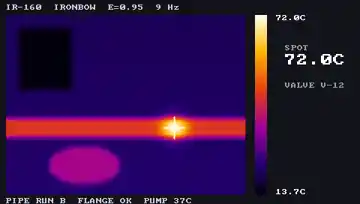
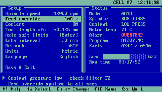
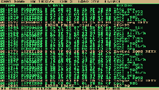
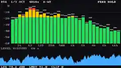

Practical EVE Bitmap Formats: PALETTED8, TEXTVGA, TEXT8X8 and BARGRAPH
Five EVE Screen Editor (ESE) demonstrations for FT810–FT813 and BT815–BT818.
Reference projects: BT815, 480 × 272, from ese-usecases-Paletted8-TextVGA-Text8x8-BarGraph.zip. These examples use synthetic demonstration data rather than measurements from connected instruments. The supplied projects were not independently run on FT81x hardware for this article.
Example screenshots from the ESE projects
The following screen captures are taken from the ESE example project's overview/ resources. They show the synthetic thermal-camera, CNC controller, CAN diagnostic trace and audio-spectrum demonstrations.








1. Overview and source projects
Unlike ordinary pixel-colour textures, these formats store compact representations that the EVE graphics engine expands during display-list rendering. PALETTED8 holds colour indices; TEXTVGA holds a character/attribute pair per cell; TEXT8X8 holds one character per cell; BARGRAPH holds a height threshold per column.
| ESE project | Format / purpose | Supplied RAM_G assets | DL words |
|---|---|---|---|
UC_Paletted8_Thermal | 160 × 120 thermal image / ironbow palette | 20,583 bytes | 106 |
UC_Paletted8_Thermal_Alarm | Palette-only temperature alarm variant | 20,594 bytes | 118 |
UC_TextVGA_Console | 60 × 17 CNC text console | 2,040 bytes | 9 |
UC_Text8x8_CANLog | J1939/CAN text trace | 4,241 bytes | 59 |
UC_Bargraph_Spectrum | 31-band spectrum and level history | 1,105 bytes | 244 |
Each example contains an .ese project, raw RAM_G payloads in resources/, and an overview screenshot. Open a project in EVE Screen Editor, configure BT815 / 480 × 272, and inspect its Content and Coprocessor tabs. The .raw resources are byte-exact memory images: firmware must place them at the corresponding RAM_G addresses before drawing.
2. PALETTED8 — thermal-camera image and palette-only alarm
The thermal demo quantizes a synthetic 160 × 120 temperature field to 19,200 byte indices. A separate 256-entry, four-byte-per-entry palette maps indices into colours, allowing colour mapping to change independently of the input pixels.
| RAM_G address | Resource | Length |
|---|---|---|
0x000000 | palette.raw (BGRA entries) | 1,024 B |
0x000400 | frame.raw (160 × 120 indices) | 19,200 B |
0x004F00 | colorbar.raw | 256 B |
0x005000 | labels.raw | 103 B |
On these devices a coloured PALETTED8 bitmap is composed using four draws. COLOR_MASK enables one output channel at a time, and PALETTE_SOURCE selects the appropriate palette byte: 3 for A, 2 for R, 1 for G and 0 for B.
BEGIN(BITMAPS);
BITMAP_HANDLE(0);
BITMAP_SOURCE(1024);
BITMAP_LAYOUT(PALETTED8, 160, 120);
BITMAP_SIZE(BILINEAR, BORDER, BORDER, 320, 240);
BITMAP_TRANSFORM_A(0, 128); /* BT81x 2x */
BITMAP_TRANSFORM_E(0, 128);
BLEND_FUNC(ONE, ZERO);
COLOR_MASK(0,0,0,1); PALETTE_SOURCE(3); VERTEX2II(8,20,0,0);
COLOR_MASK(1,0,0,0); PALETTE_SOURCE(2); VERTEX2II(8,20,0,0);
COLOR_MASK(0,1,0,0); PALETTE_SOURCE(1); VERTEX2II(8,20,0,0);
COLOR_MASK(0,0,1,0); PALETTE_SOURCE(0); VERTEX2II(8,20,0,0);
COLOR_MASK(1,1,1,1);
BLEND_FUNC(SRC_ALPHA,ONE_MINUS_SRC_ALPHA);In UC_Paletted8_Thermal_Alarm, the 19,200-byte frame is unchanged. Only the palette and labels change: entries 181–255 (the configured 55 °C threshold and higher) are mapped to green RGB(0,255,64). Updating 75 palette entries costs just 300 bytes; replacing the complete palette costs 1,024 bytes.
Use case: false-colour temperature maps, heatmaps, alarm isotherms and themes. Trade-off: four full-image passes may increase worst-scanline rendering time.
3. TEXTVGA — a 2 KB CNC controller console
The console renders 60 columns × 17 rows of 8 × 16-pixel cells, filling the 480 × 272 display. Each cell is two bytes: a CP437 character followed by a VGA foreground/background attribute. The memory requirement is 60 × 17 × 2 = 2,040 bytes.
CLEAR(1,1,1);
BLEND_FUNC(ONE,ZERO);
BEGIN(BITMAPS);
BITMAP_HANDLE(0);
BITMAP_SOURCE(0);
BITMAP_LAYOUT(TEXTVGA,120,17); /* 60 cells x 2 bytes */
BITMAP_SIZE(NEAREST,BORDER,BORDER,480,272);
VERTEX2II(0,0,0,0);The attribute byte is ((background & 15) << 4) | (foreground & 15). Address an arbitrary cell with base + 2 * (row * 60 + column); updating a character or its colour requires only two bytes. The example includes CP437 borders, coloured selections and status readouts. Its explicit BLEND_FUNC(ONE,ZERO) preserves the intended opaque console background.
Use case: operator panels, service screens, industrial terminal emulation. Trade-off: fixed 8 × 16 cells and CP437 character repertoire.
4. TEXT8X8 — a scrolling CAN diagnostic trace
The CAN logger uses a 64-row × 64-column byte ring (4,096 bytes), plus 145 bytes for fixed headings and footer. Each byte identifies one 8 × 8 CP437 glyph; the colour is selected per draw with COLOR_RGB, not stored per cell.
For the example head position 10, the 30 visible rows are physical rows 44–63 and then 0–9. Rather than moving 30 rows of text, the display list selects the circular start with an 8.8 fixed-point vertical transform:
BITMAP_HANDLE(0);
BITMAP_SOURCE(0);
BITMAP_LAYOUT(TEXT8X8,64,64);
BITMAP_SIZE(NEAREST,REPEAT,REPEAT,480,240);
BITMAP_TRANSFORM_F(90112); /* 44 rows x 8 px x 256 */
COLOR_RGB(60,230,110);
VERTEX2II(0,24,0,0);When a new message arrives, the MCU writes a 64-byte row, advances the head and adjusts the transform. For error highlighting, draw the same TEXT8X8 bitmap again, clipped to one 8-pixel-high row, with a different COLOR_RGB.
SCISSOR_XY(0,72);
SCISSOR_SIZE(480,8);
COLOR_RGB(255,70,60);
VERTEX2II(0,24,0,0);
SCISSOR_XY(0,0);
SCISSOR_SIZE(480,272);Use case: CAN, UART and diagnostic logs. Trade-off: per-row highlighting requires updating scissor positions as the ring view scrolls.
5. BARGRAPH — 31-band spectrum with history
BARGRAPH stores a threshold byte per horizontal column. In the supplied example, a source row is painted where its source y exceeds the byte. A height h is encoded as 255 - h; byte 255 is empty. A 31-band spectrum uses 12 columns per band and a 2-column gap: 31 × 14 = 434 bytes. A separate 512-byte ring stores the scrolling history; labels add 159 bytes.
BITMAP_HANDLE(0);
BITMAP_SOURCE(0);
BITMAP_LAYOUT(BARGRAPH,434,1);
BITMAP_SIZE(NEAREST,BORDER,BORDER,434,150);
BITMAP_TRANSFORM_F(27136); /* (256-150) * 256 */
SCISSOR_XY(0,24); SCISSOR_SIZE(480,15);
COLOR_RGB(255,60,50); VERTEX2II(44,24,0,0);
SCISSOR_XY(0,39); SCISSOR_SIZE(480,30);
COLOR_RGB(255,200,0); VERTEX2II(44,24,0,0);
SCISSOR_XY(0,69); SCISSOR_SIZE(480,105);
COLOR_RGB(40,220,90); VERTEX2II(44,24,0,0);
SCISSOR_XY(0,0); SCISSOR_SIZE(480,272);Drawing the same bitmap through three scissor bands creates red, yellow and green regions. Peak-hold markers are separate rectangles. Updating spectrum amplitude requires only the column bytes; scrolling history uses horizontal REPEAT and an x transform, avoiding a history-buffer copy. The example sets BITMAP_TRANSFORM_C(76800) for history column 300 and BITMAP_TRANSFORM_F(50176) for the 60-pixel-height history region.
Use case: VU meters, audio bands, trend displays and telemetry. Trade-off: source vertical coordinate space is 256 rows; taller visualizations need scaling or alternative rendering.
6. Compatibility, porting and practical checks
| Format | Bytes per element | Typical update |
|---|---|---|
| PALETTED8 | 1 byte/index, plus BGRA palette | Palette entries or index-region update |
| TEXTVGA | 2 bytes/text cell | One 2-byte character/attribute pair |
| TEXT8X8 | 1 byte/text cell | One new ring row |
| BARGRAPH | 1 byte/column | Changed column heights |
The supplied projects were generated for BT815. Their generator supports FT810, FT811, FT812, FT813, BT815, BT816, BT817 and BT818. On FT81x, the relevant 2× transform takes the one-argument 8.8 fixed-point syntax:
/* BT81x: precision argument and value */
BITMAP_TRANSFORM_A(0,128);
BITMAP_TRANSFORM_E(0,128);
/* FT81x: 8.8 signed fixed-point value */
BITMAP_TRANSFORM_A(128);
BITMAP_TRANSFORM_E(128);python -m pip install numpy
python make_assets.py --device FT813
python make_assets.py --device BT817For 800 × 480 ports, use VERTEX2F where x/y exceed VERTEX2II's 9-bit coordinates; use BITMAP_SIZE_H and BITMAP_LAYOUT_H where dimension and stride fields exceed their base-command limits. Reset persistent high-bit bitmap state when reusing handles. Verify RAM_G placement, the display-list swap and scanline timing on target hardware.
7. Rebuilding the raw RAM_G assets and ESE projects
The supplied archive contains make_assets.py, a deterministic Python generator that creates the raw binary memory regions, the ESE project descriptions and the overview metadata. The sample input is synthetic; no thermal sensor, CAN adapter or microphone is required.
Prerequisites and commands
Extract the provided ese-usecases-Paletted8-TextVGA-Text8x8-BarGraph.zip archive and run the following commands from the extracted directory:
python -m pip install numpy
python make_assets.py # rebuild the five default BT815 projects
python make_assets.py --device FT813 # write an FT813 project set into ./FT813/
python make_assets.py --device BT817 # write a BT817 project set into ./BT817/
python make_assets.py --help # list all supported --device valuesPython 3.7 or later and NumPy are required. The script's supported targets are FT810–FT813, BT815–BT818 and BT880–BT883. The default device is BT815.
How the generator works
- Modify a screen's builder: open
make_assets.pyand editbuild_thermal(),build_console(),build_canlog()orbuild_spectrum(). The alarm variation is produced from the thermal builder. - Regenerate the project: rerun the generator for the intended
--device. The script emits eachUC_.../resources/*.raw, the matchingUC_....eseproject andoverview/overview.json. - Inspect the RAM_G map: each raw asset is a headerless byte image. The
.eseContent tab defines itsfileType: Rawand fixedmemoryAddress. The Coprocessor tab documents the address map and display-list code. - Open and check in ESE: choose File → Open, select a generated
.ese, and confirm the display and expected memory layout. For a different panel, update the ESE resolution and display-list layout as needed. - Refresh the screenshot manually: the generator intentionally does not regenerate
overview/*.png. Capture a fresh ESE screenshot after modifying graphics.
Example data generation for each bitmap format
| Project | Raw asset creation | Update unit |
|---|---|---|
| PALETTED8 thermal | Quantize a 120×160 floating-point temperature field into 8-bit indices. Build 256 BGRA entries and a separate 256-byte palette colour bar. | One pixel index or palette entry (4 bytes) |
| TEXTVGA console | Encode CP437 characters and VGA foreground/background attributes in a (17,60,2) array. | 2 bytes per character cell |
| TEXT8X8 CAN log | Build 64 rows × 64 columns of CP437 bytes and select the visible portion with bitmap transform. | 64 bytes per incoming log line |
| BARGRAPH spectrum | Generate 31 band levels, each stored across 12 bar columns and two 255-valued gap columns; construct the 512-column history ring. | One byte per column |
Minimal examples derived from the archive's generator:
# PALETTED8 indices and BGRA lookup table
indices = np.rint((temperature - temperature.min()) /
np.ptp(temperature) * 255).astype(np.uint8)
indices.tofile("frame.raw")
palette = np.zeros((256, 4), dtype=np.uint8)
palette[:, 0], palette[:, 1], palette[:, 2], palette[:, 3] = blue, green, red, 255
palette.tofile("palette.raw")
# TEXTVGA character and colour attributes
cells = np.zeros((17, 60, 2), dtype=np.uint8)
cells[..., 0] = ord(" ")
cells[..., 1] = (1 << 4) | 7
cells.tofile("screen.raw")
# BARGRAPH vertical threshold values; 255 means empty
columns = np.full(31 * 14, 255, dtype=np.uint8)
for band in range(31):
columns[band * 14:band * 14 + 12] = 255 - heights[band]
columns.tofile("spectrum.raw")These small snippets illustrate the byte layouts; the supplied make_assets.py is the complete source for reproducing all projects, labels, address maps and display-list commands. Running the snippets alone does not generate an ESE project.
8. References
- Source:
ese-usecases-Paletted8-TextVGA-Text8x8-BarGraph.zipsupplied for this tutorial; see itsREADME.md,make_assets.py, five.eseprojects andresources/assets. - Bridgetek product and documentation portal
- Bridgetek open-source documentation
- EVE-MCU-Dev